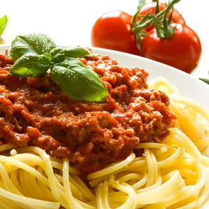
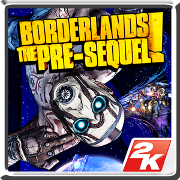
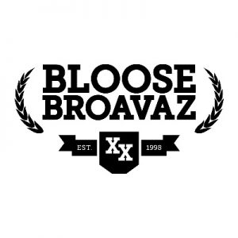

Horváth Gábor - ZincSaucier
"Teljesen mindegy mit, kit, hol, mikor és mennyit én feldolgozom és már kész is minőségi étel."
Főzés
Már gyerekkorom óta, oda voltam a gasztronómiért és már akkoriban meg is tanultam egy-két alapdolgot, a dédnagyanyámtól és édesanyámtól. Később ennek hatására vendéglátó ipari iskolába mentem és bár nem ezt választottam szakmának, szinte napi rendszerességgel főzök. Szívesen űzöm az ételkészítés művészetét a konyhában, a szabadban egy grill sütőn vagy akár egy bográccsal a Dunaparton. A főzés több területét is kipróbáltam, de leginkább a keltészták készítésében vagyok legjobb, mint például, pizzák, pogácsák, aranygaluska stb, valamint a dessszertek/torták készítése is jól megy. Főzni jó dolog, pláne ha az étel jól is sikerül és erről pozitív visszajelzést is kapunk. Ha ismerősökkel és barátokkal tartunk egy összejövetelt, akkor esetek többségében én leszek a szakács a végén, de nem is bánom.
Gaming
Mint sokan mások, szabadidőmben én is szoktam játszani, bár igaz, hogy az idő múlásával egyre kevesebbet. Általános iskolásként kezdtem édesapám gépén játszogatva egy-két gyerek játékkal, mint pl a hupikék törpikék. Majd egy közös ismerős általál volt szerencsém játszani a Diablo sorozat első részével, ami már sokkal komplexebb volt és talán ekkor kedveltem meg igazán a játékokat. Ezután nem sokkal kóstoltam csak bele mégjobban az Unreal Tournament-tel valamint a Red Alert I-II-vel. Személyszerint jobban szeretem azokat a játékokat amik logika vagy taktika kihívások elé állítják az embert, mint sem az ügyességieket, bár nem állítom, hogy csak ilyennekel játszom/játszottam. Kedvenc játékaim: Borderlands 2, Dragon Age:Origins, Grim Dawn, Heroes III In the Wake of Gods, Warcraft III (akár jó kis modolt pályákkal).
Hip-Hop
"Ha visz a Flow menni kell." Azért itt az elején leszögezném, hogy nem csak hip-hop-ott hallgatok, sőt nem is ezzel kezdtem SŐT régen kifejezetten nem szerettem. Punk/Rockerként cseperedtem fel és nem is bánom, a mainapig ha meghallok egy jó Junkies számot, akkor rám jön a csápolhatnék. Lényeg a lényegben ahogy telt múlt az idő szélesedett a látóköröm, majd elkezdtem belehallgatni ebbe-abba és mai napra már nem csak kifejezetten műfaj orientáltan hallgatok zenét. Azonban, ha zene hallgatásra kerül a sor legtöbbször a magyar hip-hop-ot választom és abból is a 90-évek gyöngyét a boom bap rap-et. Szeretem a melankólikus dallamokat és a jól felépített rímeket plána ha van mögötte tartalom. Személyes kedvencek: Barbárfívérek, Raptorz, Phat(előadó)
